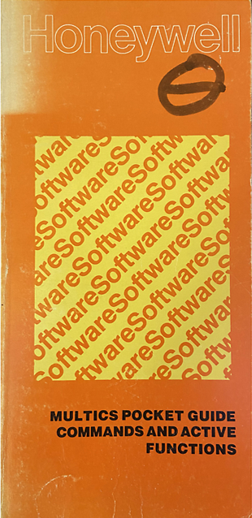

(Links are to the Multics Glossary.)
Here is a list of 314 Multics Standard Service System commands and active functions, from Multics Pocket Guide: Commands and Active Functions, Order No. AW17, April 1980, as of MR8.0.
Al Kossow has posted a scan of the entire  Multics Programmer's Manual: Commands and Active Functions, AG92, (861 pages) as a 39MB pdf file.
Multics Programmer's Manual: Commands and Active Functions, AG92, (861 pages) as a 39MB pdf file.

Cover of my copy of AW17
| abbrev (ab) | command abbreviation | |
| accept_messages (am) | allow interactive messages | |
| add_name (an) | add a name to a directory entry | |
| add_search_paths (asp) | add a search path to a search list | |
| add_search_rules (asr) | add a search rule | |
| adjust_bit_count (abc) | set segment's bit count to include last char | |
| AF | after (af) | return characters of a string after a specified argument |
| answer | run a command and answer its questions | |
| apl (v2apl) | invoke APL language interpreter | |
| archive (ac) | combine segments | |
| AF | archive_table (act) | return a list of segments in an archive |
| assign_resource (ar) | assign a resource to the user process | |
| attach_audit (ata) | attach an I/O switch that keeps a copy in a multisegment file | |
| attach_lv (alv) | attach a logical volume to the user process | |
| AF | before (be) | return characters of a string before a specified argument |
| AF | binary (bin) | return translation of an argument to binary base |
| bind (bd) | produce an object segment from multiple object segments | |
| AF | bool | perform boolean operations on arguments |
| AF | branches | return list of branches in a directory |
| AF | calc | perform simple calculations |
| calendar | produce printable calendar | |
| cancel_abs_request (car) | remove absentee request from queue | |
| cancel_cobol_program (ccp) | cancel COBOL program from current run unit | |
| cancel_daemon_request (cdr) | remove I/O daemon request from queue | |
| cancel_resource (cnr) | cancel reservations made with the reserve_resource command | |
| cancel_retrieval_request (crr) | remove retrieve request from queue | |
| canonicalize (canon) | ensure that segment contents are in canonical form | |
| AF | ceil | return smallest decimal number larger than its argument |
| change_default_wdir (cdwd) | change default working directory | |
| change_error_mode (cem) | change verbosity of default error handler | |
| change_wdir (cwd) | change working directory | |
| check_iacl | list directory entries with ACLs that don't match initial ACL | |
| check_info_segs (cis) | list help segments that have changed (source) | |
| close_file (cf) | close a multisegment file | |
| cobol | invoke COBOL compiler | |
| cobol_abs (cba) | enter absentee request to compile a COBOL program | |
| AF | collate | return 128-character collation string |
| AF | collate9 | return 512-character collation string |
| compare | compare two segments in binary mode | |
| compare_ascii (cpa) | compare two segments in ASCII | |
| AF | contents | return contents of a segment |
| convert_characters (cvc) | translate characters in a segment | |
| copy (cp) | make a copy of a segment | |
| copy_acl | copy ACL of one directory entry to another | |
| copy_cards (ccd) | copy card image segments from system pool | |
| AF | copy_characters (cpch) | return string with N copies of argument |
| copy_dir (cpd) | copy directory | |
| copy_file (cpf) | copy multisegment file | |
| copy_iacl_dir | copy initial ACL for dirs of one directory entry to another | |
| copy_iacl_seg | copy initial ACL for segs of one directory entry to another | |
| create (cr) | create a segment | |
| create_data_segment (cds) | create an object segment with data definitions | |
| create_dir (cd) | create a directory | |
| cumulative_page_trace (cpt) | trace a program and display its paging actions | |
| damaged_sw_off (dsf) | turn off a directory entry's damaged switch | |
| damaged_sw_on (dsn) | turn on a directory entry's damaged switch | |
| AF | date | return the date |
| AF | date_compiled (dtc) | return the date an object segment was compiled |
| AF | date_time | return date and time |
| AF | day | return day number |
| AF | day_name | return day name |
| debug (db) | invoke low level debugger | |
| AF | decat | return portions of an input string |
| AF | decimal | return an argument converted to decimal mode |
| decode | decrypt an enciphered file | |
| AF | default | return default values if none suppled |
| AF | default_wdir (dwd) | return default working directory |
| defer_messages (dm) | hold printing of interactive messages | |
| delete (dl) | delete a directory entry | |
| delete_acl (da) | delete an ACL entry | |
| delete_dir (dd) | delete a directory | |
| delete_iacl_dir (did) | delete a directory initial ACL entry | |
| delete_iacl_seg (dis) | delete a segment initial ACL entry | |
| delete_message (dlm) | delete a held interactive message | |
| delete_name (dn) | remove a name from a directory entry | |
| delete_search_paths (dsp) | delete a search path from a search list | |
| delete_search_rules (dsr) | delete a ready message | |
| detach_audit (dta) | detach an audit I/O switch | |
| detach_lv (dlv) | detach a logical volume | |
| p | dial (d) | connect a terminal to a running process |
| AF | directories (dirs) | return a list of directories |
| AF | directory | return directory portion of a pathname |
| discard_output (dco) | run a command and discard its output | |
| display_audit_file (daf) | display an audit file | |
| display_cobol_run_unit (dcr) | list programs in the current COBOL run unit | |
| display_pl1io_error (dpe) | display most recent PL/I I/O error | |
| AF | divide | return result of division |
| AF | do | execute a command, substituting arguments |
| dprint (dp) | enter an I/O daemon print request in queue | |
| dpunch (dpn) | enter an I/O daemon card punch request in queue | |
| AF | dump_segment (ds) | display a segment in ASCII |
| echo | type input arguments | |
| edm | invoke ASCII text editor | |
| emacs | invoke ASCII text editor | |
| encode | encrypt a segment into enciphered form | |
| p | enter (e) | log in as an anonymous user |
| enter_abs_request (ear) | enter a request for absentee processing in queue | |
| enter_retrieval_request (err) | enter a request for file retrieve in queue | |
| p | enterp (ep) | log in as an anonymous user, with password |
| AF | entries | return list of entries in a directory |
| AF | entry | return entry name portion of a pathname |
| AF | equal | test if two strings are equal |
| AF | equal_name | return a pathname constructed according to the equal convention |
| exec_com (ec) | execute a list of commands from a segment | |
| AF | exists | test if a file exists |
| expand_cobol_source (ecs) | expand COBOL source | |
| fast | invoke the FAST (BASIC) subsystem | |
| file_output (fo) | redirect user_output I/O switch to a multisegment file | |
| AF | files | return a list of multisegment files in a directory |
| AF | floor | return the largest decimal number less than an argument |
| AF | format_line (fl) | return a formatted line |
| fortran (ft) | invoke FORTRAN compiler | |
| fortran_abs (fta) | enter a request for absentee FORTRAN compilation in queue | |
| gcos (gc) | invoke GCOS simulator | |
| AF | general_ready (gr) | change format of ready message |
| AF | get_pathname (gpn) | return pathname of an active segment |
| get_quota (gq) | display storage quota for a directory | |
| get_system_search_rules (gssr) | get system ready messages | |
| AF | greater | test if one argument is greater than another |
| p | hangup | hang up without logging in |
| AF | have_mail | test if a mailbox is empty |
| p | hello | repeat system greeting message |
| help | display system information files (source) | |
| AF | hexadecimal (hex) | return argument converted to hexadecimal base |
| AF | high | return string of \177 characters |
| AF | high9 | return string of \777 characters |
| AF | home_dir (hd) | return home directory pathname |
| AF | hour | return hour |
| how_many_users (hmu) | display number of users logged in | |
| if | execute command line if a condition is met | |
| immediate_messages (im) | allow interactive messages to print | |
| indent (ind) | prettyprint PL/I source | |
| AF | index | return location of one string in another |
| AF | index_set | return list of integers |
| initiate (in) | assign a segment a segment number (make it known) | |
| AF | io_call (io) | configure and operate on process's I/O switches |
| AF | last_message (lm) | return last interactive message text |
| AF | last_message_sender (lms) | return last interactive message sender |
| AF | last_message_time (lmt) | return last interactive message time |
| AF | length (ln) | return length of argument |
| AF | less | test if one argument is greater than another |
| line_length (ll) | set terminal line length | |
| link (lk) | create a link | |
| AF | links (nonbranches) | return list of links in a directory |
| list (ls) | list a directory's contents | |
| list_abs_requests (lar) | list absentee request queue | |
| list_accessible (lac) | list directory entries accessible by a user | |
| AF | list_acl (la) | display a directory entry's ACL |
| list_daemon_requests (ldr) | list I/O daemon request queue | |
| list_help (lh) | list system help files (source) | |
| AF | list_iacl_dir (lid) | display a directory's initial ACL for directories |
| AF | list_iacl_seg (lis) | display a directory's initial ACL for segments |
| list_not_accessible (lnac) | list directory entries not accessible by a user | |
| list_ref_names (lrn) | list reference names for initiated segments (source) | |
| list_resource_types (lrt) | list types in a resource definition type table | |
| list_resources (lr) | list a process's assigned resources | |
| list_retrieval_requests (lrr) | list file retrieve request queue | |
| p | login (l) | create a process for a user |
| logout | destroy a user process and release terminal connection | |
| AF | long_date | return long date |
| AF | low | return string of \000 characters |
| AF | lower_case | return argument mapped to lower case |
| AF | ltrim | return argument with blanks trimmed on left |
| AF | lv_attached | test if a logical volume is attached to the process |
| AF | manage_volume_pool | manage volume pool, assign and release scratch tapes |
| AF | master_directories (mdirs) | list master directories |
| AF | max | return largest value |
| memo | invoke reminder management tool | |
| merge | invoke general merge tool | |
| merge_ascii (ma) | merge ASCII segments | |
| AF | min | return smallest value |
| AF | minus | return result of subtraction |
| AF | minute | return minute |
| AF | mod | return result of mod function |
| p | modes | set terminal modes before login |
| AF | month | return month |
| AF | month_name | return month name |
| move (mv) | move a directory entry to a new directory | |
| move_abs_request (mar) | move absentee request to new queue | |
| move_daemon_request (mdr) | move I/O daemon request to new queue | |
| move_dir (mvd) | move a directory to a new directory | |
| move_quota (mq) | move quota between directories | |
| AF | msfs | return list of multisegment files |
| AF | nequal | test if arguments are unequal |
| new_fortran | invoke new FORTRAN compiler | |
| new_proc | end this process and create a new one attached to this terminal | |
| AF | ngreater | test if one argument is not greater than another |
| AF | nless | test if one argument is not less than another |
| no_save_on_disconnect | set switch to discard process on hangup | |
| AF | nondirectories (nondirs) | return list of non-directory entries |
| AF | nonfiles | return list of non-multisegment file entries |
| AF | nonmsfs | return list of non-multisegment file entries |
| AF | nonnull_links (nnlinks) | return list of non-null link entries |
| AF | nonsegments (nsegs) | return list of non-segment entries |
| AF | nonzero_files (nzfiles) | return list of nonzero multisegment file entries |
| AF | nonzero_msfs (nzmfsfs) | return list of nonzero MSF entries |
| AF | nonzero_segments (nzsegs) | return list of nonzero multisegment file entries |
| AF | not | return negation of its argument |
| AF | null_links | return list of null link entries |
| AF | octal (oct) | return argument represented in octal base |
| AF | on | execute a command line and catch signals |
| AF | or | return logical OR of arguments |
| overlay (ov) | create segment that superimposes input segments | |
| page_trace (pgt) | trace paging activity | |
| AF | path | return pathname of argument |
| AF | picture (pic) | return argument converted according to a picture |
| pl1 | invoke PL/I compiler | |
| pl1_abs (pa) | enter request for absentee PL/I compilation in queue | |
| AF | plus | return result of addition |
| print (pr) | display segment or multisegment file on terminal | |
| AF | print_attach_table (pat) | display process's I/O switch attachments |
| print_auth_names (pan) | display sensitivity levels and compartments | |
| print_default_wdir (pdwd) | display default working directory | |
| print_mail (pm) | display mail in a mailbox | |
| print_messages (pm) | display interactive messages in a mailbox | |
| print_motd (pmotd) | display message of the day (source) | |
| print_proc_auth (ppa) | display process's sensitivity level and compartments | |
| print_request_types (prt) | display list of I/O daemon request types | |
| print_search_paths (psp) | display search paths | |
| print_search_rules (psr) | display ready messages | |
| print_wdir (pwd) | display working directory | |
| probe (pb) | invoke high-level symbolic debugger | |
| AF | process_dir (pd) | return process directory pathname |
| profile (pf) | execute a program and count each statement's execution | |
| program_interrupt (pi) | re-enter interactive program after QUIT | |
| progress (pg) | execute a program and indicate progress | |
| qedx (qx) | invoke ASCII text editor | |
| AF | query | ask question in an exec_com |
| AF | quotient | return result of division |
| read_mail (rdm) | read mailbox | |
| ready_off (rdf) | turn off ready message | |
| ready_on (rdn) | turn on ready message | |
| release (rl) | release suspended execution after QUIT | |
| rename (rn) | rename a directory entry | |
| repeat_query (rq) | reprint last query | |
| reprint_error (re) | display last error | |
| reserve_resource (rsr) | reserve resource for process | |
| resolve_linkage_error (rle) | specify object segment and entrypoint to use after linkage error | |
| resource_usage (ru) | display account's system resource quotas and usage (source) | |
| AF | response | returns answer to a question |
| AF | reverse (rv) | returns a string in reversed order |
| AF | reverse_after (rvaf) | returns same as after, but in reverse order |
| AF | reverse_before (rvbe) | returns same as before, but in reverse order |
| AF | reverse_index (rvindex) | returns same as index, but in reverse order |
| AF | reverse_search (rvsrh) | returns same as search, but in reverse order |
| AF | reverse_verify (rvverify) | returns same as verify, but in reverse order |
| AF | rtrim | returns argument with blanks trimmed on right |
| run | run a command in an isolated environment | |
| run_cobol (rc) | run a COBOL program | |
| runoff (rf) | format document for printing | |
| runoff_abs (rfa) | enter a request for absentee runoff formatting in queue | |
| safety_sw_off (ssf) | turn off a directory entry's safety switch | |
| safety_sw_on (ssn) | turn on a directory entry's safety switch | |
| save_on_disconnect | set switch to preserve process on hangup | |
| AF | search | return leftmost position of specified chars in an argument |
| AF | segments (segs) | return a list of segments in a directory |
| send_mail (sdm) | send an electronic mail message | |
| send_mesage (sm) | send an interactive message | |
| send_mesage_acknowledge (sma) | send an interactive message, request ack | |
| send_mesage_express (smx) | send an interactive message if user accepting | |
| send_mesage_silent (sms) | send an interactive message, no errors | |
| set_acl | set the ACL of a branch | |
| set_bit_count (sbc) | set a segment's bit count | |
| set_cc | set FORTRAN carriage control | |
| set_fortran_common (sfc) | set a process's FORTRAN COMMON storage | |
| set_iacl_dir (sid) | set a directory's initial ACL for directories | |
| set_iacl_seg (sis) | set a directory's initial ACL for segments | |
| set_search_paths (ssp) | set search paths | |
| set_search_rules (ssr) | set ready messages | |
| AF | severity | return the exit status of the last command |
| p | slave | make a terminal available for use by another process |
| sort | invoke general sort facility | |
| sort_seg (ss) | sort an ASCII segment | |
| start (sr) | restart interrupted execution after QUIT | |
| status (st) | display a directory entry's file system attributes | |
| stop_cobol_run (scr) | stop the current COBOL run unit execution | |
| stop_run | discard the current run environment | |
| AF | string | return concatenation of all arguments |
| AF | strip | return filename argument with suffix removed |
| AF | strip_entry (spe) | return entryname argument with suffix removed |
| AF | substr | return specified substring of argument |
| AF | suffix | return last component of filename argument |
| AF | system | display system administration parameters |
| tape_archive (ta) | maintain an archive of files on tape | |
| p | terminal_type (ttp) | set terminal type before login |
| terminate (tm) | make a segment unknown | |
| terminate_segment (tms) | make a segment unknown given segment number | |
| terminate_refname (tmr) | make a segment unknown given its reference name | |
| terminate_single_refname (tmsr) | make a single reference name unknown | |
| AF | time | return the time |
| AF | times | return result of multiplication |
| trace | execute a command and trace subroutine calls | |
| trace_stack (ts) | display call history of interrupted execution | |
| AF | translate | return replacement of some chars by others in argument |
| AF | trunc | return decimal value of argument with fraction truncated |
| truncate (tr) | discard data in a segment past a given location | |
| unassign_resource (ur) | unassign a resource assigned to the process | |
| AF | underline | return a value with underlining |
| AF | unique | return a unique character string |
| unlink (ul) | remove a link from a directory | |
| AF | upper_case | return an argument mapped to upper case |
| AF | user | display user registration parameters |
| AF | verify | return the location of first character of argument not in a list |
| vfile_adjust (vfa) | adjust length parameters of a multisegment file | |
| vfile_status (vfs) | display file system attributes for a multisegment file | |
| volume_dump_switch_off (vdsf) | turn off a directory entry's volume dump switch | |
| volume_dump_switch_on (vdsn) | turn on a directory entry's volume dump switch | |
| walk_subtree (ws) | execute a command on every entry inferior to a directory | |
| where (wh) | use search rules to find a file (source) | |
| where_search_path (wsp) | use a specified search list to find a file | |
| who | display the names of users logged in (source) | |
| AF | working_dir (wd) | return current working directory |
| AF | year | return year |
| AF | zero_segments (zsegs) | return a list of segments with zero bit count |
NOTES
-
"AF" indicates that the command could also be called as an active function on a shell command line, by enclosing the command name in brackets. For example,
ioa_ [date]This required special coding in the command to see if it was called as an active function and if so, to return a string value instead of writing on user_output.
-
"p" indicates a "pre-login" command. You could issue these commands when you first connected your terminal to the system. These commands were not implemented as separate programs, but rather as fixed request tokens interpreted by the Answering Service. There were several more such commands: 963, 938, and MAP for three.
-
This is by no means all of the commands available on Multics.
- This edition of AW17 was full of typos and omissions.
-
This list includes only Standard Service System (SSS) commands. These were the commands documented for general use. In addition, there were other libraries of commands:
- system and project administrator commands
- operator commands
- system developer tools
- author-maintained commands
- unbundled commands, including those related to MRDS, compose, etc.
- obsolete commands still used by many users
- Understand that this is a snapshot as of 1980. Commands were added, and others superseded or moved to non-SSS libraries, throughout the evolution of Multics. For example, sometime in the 1980s, dprint was replaced by enter_output_request (eor), a more symmetrical name. The dprint command continued to work, but was deprecated.